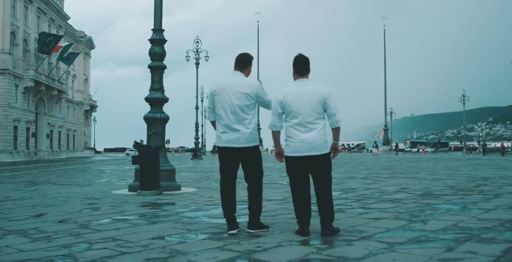
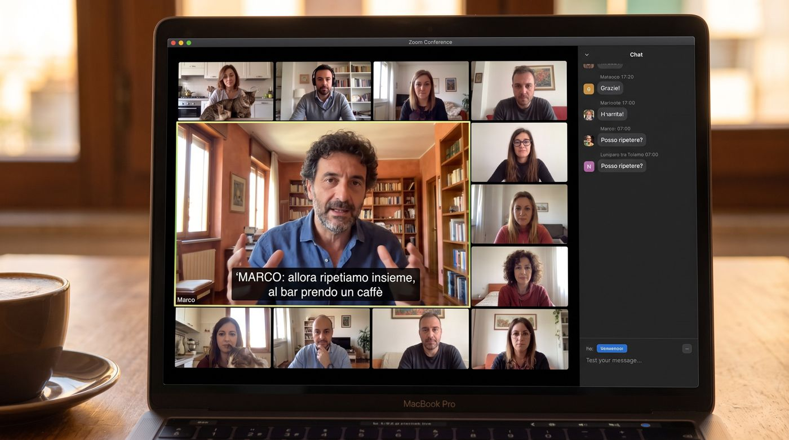

You don't study Italian. You act in it.
An action-oriented, communicative method aligned with the Common European Framework. Every lesson ends with something you can do in Italian that you could not do before.
Learning by doing
The CEFR treats the learner as a social agent who uses language to get things done. Each lesson is built around a task: ordering, booking, negotiating, persuading.
Situated in a place
Every unit is anchored in a real Italian city and setting, so vocabulary arrives with its context, its gestures and its manners.
Culture at the core
Art, food, opera, cinema and daily ritual are not extras. They are the material the language is taught through.

One lesson, five movements.
Riscaldamento
A warm-up conversation that recycles last lesson's language.
Input
Authentic material from the city: a menu, a clip, a sign, a dialogue.
Focus on form
The grammar point, explained precisely and practised in context.
Task
Pairs and small groups complete a real-world task in Italian.
Feedback
Personal correction from the teacher and a short summary for Biagio practice.
The research behind the method.
- Council of Europe (2020). Common European Framework of Reference for Languages: Companion Volume.
- Piccardo, E. and North, B. (2019). The Action-oriented Approach. Multilingual Matters.
- Università per Stranieri di Siena. CILS certification descriptors.
- Università per Stranieri di Perugia. CELI certification descriptors.
Club Italia is independent and is not affiliated with, nor endorsed by, the institutions cited.
See the method in a real class.
Watch a recorded Club Italia lesson, then book your placement.